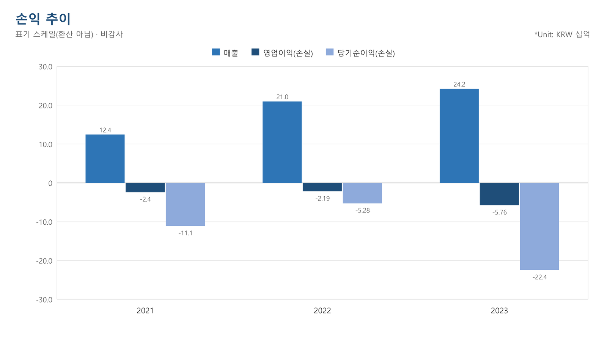
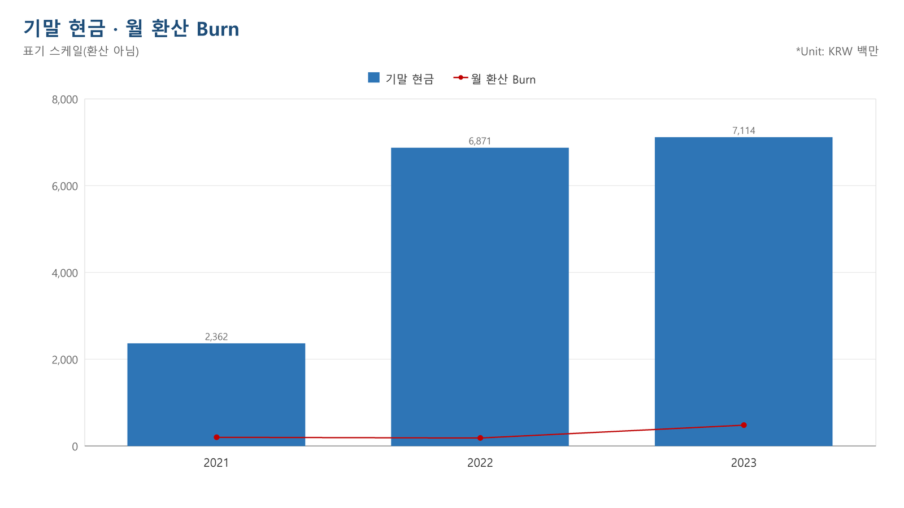
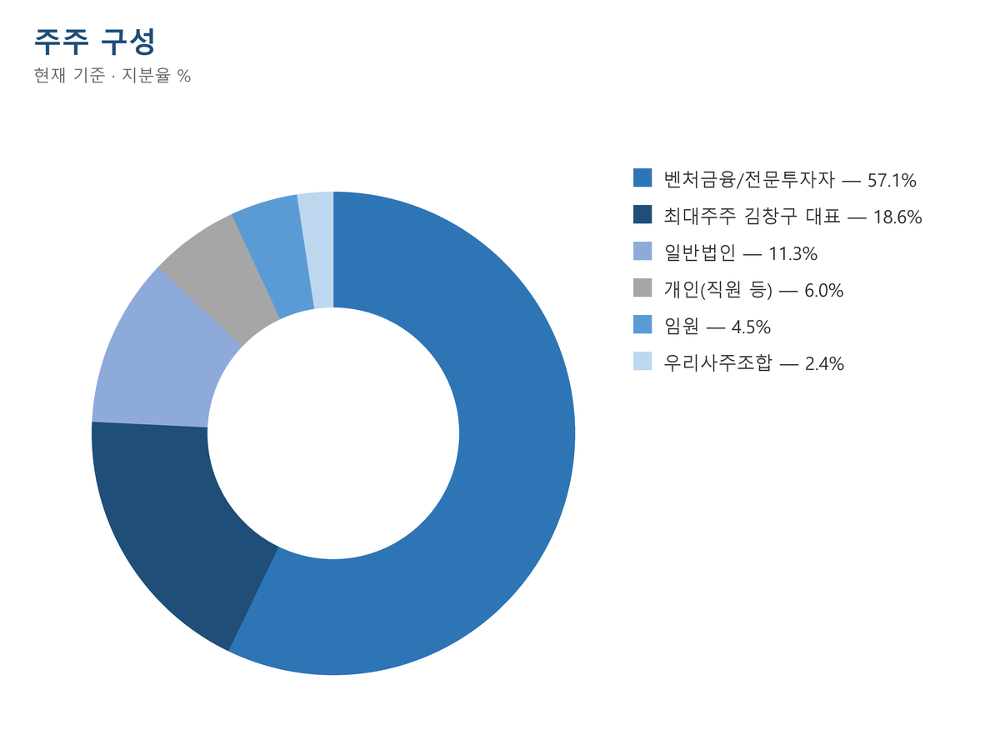

클로봇 투자심사보고서
자료 시점: 클로봇 투자설명서(DART, 2024-10-15 정정본) 1건과 2024-10-15 이전 공개 기사. 신뢰도 중(공시 기반, 회사 내부자료·인터뷰 없음). 과제 시연용 가상 검토로 실제 검토·의견이 아니며, 거래 조건(프리IPO 라운드 30억원 참여)은 가정임.
Executive Summary
투자 검토: 30억원 (프리IPO, 가정)
| 항목 | 내용 |
|---|---|
| 투자 구분 | 프리IPO 라운드(2023.10~11) 보통주 신주 추가 참여 가정 |
| 투자 금액 | 30억원(46,620주 × 주당 64,350원) |
| 기업가치 | Pre 1,106.8억원 / Post 1,236.8억원(발행가 × 주식수로 산출, 회사 공시 밸류 없음) |
| 기존·누적 조달 | 상장 전 누적 281억원(2023.12 보도 기준) |
| Exit 시나리오 | 2024.10 코스닥 상장 후 2026년 장내 매도, Base 회수 105.4억원(MoIC 3.51x) |
| 회사명 | ㈜클로봇 | 대표이사 | 김창구 |
| 설립일 | 2017.05.08 | 본사 | 경기도 성남시 분당구 |
| 주요사업 | 로봇 자율주행·관제 소프트웨어와 로봇 서비스 | 종업원수 | 142명(2024.10) |
| 투자단계 | 프리IPO 후 2024.10 코스닥 기술특례 상장 | 누적조달 | 상장 전 281억원 |
| 주요주주 | 김창구 18.61% | 주요투자자 | 신한벤처투자 9.22%, 에이티넘 7.53%, 한국산업은행 6.39% |
| 구분 | 로봇 솔루션 | 로봇 서비스 | 상품(로아스) |
|---|---|---|---|
| Customer | 로봇 제조사·제조 대기업(현대모비스 등) | 공공기관·병원·제조·물류 현장 | 대학·연구기관·제조사 |
| Pain Point | 제조사마다 주행·관제 소프트웨어가 달라 여러 로봇을 함께 운영하기 어려움 | 로봇 도입 시 설계·설비 연동·운영 역량이 부족함 | 해외 로봇 하드웨어를 국내에서 조달할 창구가 부족함 |
| Business Model | 카멜레온 대당 라이선스·포팅비, 크롬스 라이선스·서비스비 | 하드웨어 포함 일괄 수주·유지보수·RaaS | 해외 제조사 총판 하드웨어 유통 |
마일스톤: 2017.05 설립 → 2020.01 크롬스 출시 → 2022.10 카멜레온 현대로보틱스 라이선스(9.8억원) → 2023.12 현대차 조지아 공장 이송로봇(35억원) → 2024.03 보스턴다이나믹스 파트너십 → 2024.10 코스닥 상장
| 구분 | CEO 김창구 | COO 김경필 | CTO 황서연 |
|---|---|---|---|
| 이력 | 연구기관 연구원(PM)·㈜로보케어 이사(기관명 확인 요청) | LG CNS 부장·아토리서치 상무, 로아스 대표 겸직 | 고려대 기계공학 박사, 삼성전자 글로벌기술센터 책임연구원 |
| Investment Highlight | Risk |
|---|---|
| 크롬스가 현대모비스·KIRO 등 제조·공공 현장 관제에 쓰이며 레퍼런스를 확보함 | 2024~2026년 매출 추정 대부분이 미계약 프로젝트이고 상반기 적자가 연간 추정을 넘음 |
| 솔루션 매출을 2026년 91.4억원으로 키울 계획이며 라이선스 단가 사례가 확인됨 | 연결 매출의 약 49%가 하드웨어 유통이라 2023년 매출총이익률이 14.5%에 그침 |
| 현대차 조지아 공장 공급과 보스턴다이나믹스 파트너십으로 제조·해외 진입 경로를 확보함 | 핵심 이기종 관제 특허가 출원 단계이고 글로벌 AMR 기업도 자사 관제를 함께 공급함 |
용어: FMS=여러 로봇의 작업 배정·경로·교통을 제어하는 시스템, RaaS=로봇을 구매 대신 구독형으로 쓰는 서비스, AMR=자율주행 이동 로봇, PSR=시가총액÷매출, MoIC=회수금÷투자금, IRR=연 환산 수익률
1. 회사 개요
1) 회사 개요 및 사업 모델 개관
로봇 자율주행·관제 소프트웨어를 파는 로봇 서비스 기업
- 클로봇은 2017년 5월 설립된 로봇 소프트웨어·서비스 기업이며, 로봇 하드웨어는 직접 생산하지 않음12
- 주력은 범용 자율주행 솔루션 카멜레온과 이기종 로봇 관제 솔루션 크롬스이며, 안내·이송·보안·물류·제조 현장에 공급함3
- 자회사 로아스가 해외 로봇 하드웨어를 총판으로 들여와 공급하며, 2023년 로아스 상품 매출은 119.4억원으로 연결 매출의 약 49%임4
- 2024년 2월 기술성 평가 AA 등급을 받고 2024년 10월 코스닥 기술특례 상장을 진행함56
회사 기본정보
| 항목 | 내용 |
|---|---|
| 회사명 | ㈜클로봇(CLOBOT CO.,Ltd)1 |
| 설립 | 2017.05.08, 경기도 성남시 분당구 소재1 |
| 대표 | 김창구(최대주주, 지분 18.61%)7 |
| 사업 | 로봇 솔루션(카멜레온·크롬스), 로봇 서비스, 로봇 하드웨어 유통(로아스)8 |
| 단계/라운드 | 프리IPO(2023.10~11, 보통주 주당 64,350원) 후 코스닥 상장(2024.10, 공모가 13,000원)96 |
| 인원·신용등급 | 직원 142명, 신용등급 B-(이크레더블, 2024.04)103 |
2) 연혁
공공 안내로봇에서 출발해 제조·물류 관제로 넓힌 7년 이력
- 2017~2021년에는 한국문화정보원 큐레이팅봇 등 공공 안내로봇 사업으로 성장함11
- 2022년 현대로보틱스에 카멜레온 라이선스를 공급하며 제조사 대상 솔루션 사업을 시작함5
- 2023년 현대차 조지아 공장 자율주행 이송로봇(35억원)을 공급하며 해외 제조 현장에 진입함5
연혁
| 시점 | 이벤트 |
|---|---|
| 2017.05 | 법인 설립11 |
| 2018.03 | 현대자동차 제로원 1기 선정(액셀러레이터 투자 유치)11 |
| 2019.01 | Series-A 투자 유치(네이버 외 4개 기관)11 |
| 2020.01 | 클라우드 기반 로봇 관리 시스템 크롬스 출시11 |
| 2021.07 | 국립암센터 컨시어지 로봇 서비스 사업 수주(15억원)11 |
| 2022.01 | Series-B 투자 유치(신한벤처투자 외 3개 기관)5 |
| 2022.10 | 카멜레온 라이선스 계약(현대로보틱스, 9.8억원)5 |
| 2023.12 | 모비어스밸류체인 통해 현대 조지아 공장 자율주행 이송로봇 공급(35억원)5 |
| 2024.02 | 기술성 평가 AA 등급 획득5 |
| 2024.03 | 보스턴 다이나믹스와 전략적 파트너십 체결5 |
| 2024.10 | 코스닥 상장, 공모 390억원(주당 13,000원)6 |
3) 핵심 인력 및 조직도
대표·CTO는 로봇 연구 출신, 사업 조직은 LG CNS 출신 중심
- 김창구 대표는 연구기관 연구원(PM)과 로봇 기업 ㈜로보케어 이사를 거쳐 2017년 창업함12
- 대표 경력 기관명이 투자설명서는 한국과학기술원(KAIST), 2024년 9월 보도는 한국과학기술연구원(KIST)으로 달라 회사 확인이 필요함1213
- 황서연 CTO는 고려대 기계공학 박사로 삼성전자 글로벌기술센터 책임연구원 출신임14
- 사업 총괄 임원 다수가 LG CNS 출신으로 대기업 시스템 구축 영업 경험을 갖춤14
핵심 인력
| 성명 | 직책 | 학력 | 주요 경력 |
|---|---|---|---|
| 김창구 | 대표이사(CEO) | 서울대 기계공학 박사 수료, 전남대 기계공학 석사 | 연구기관 연구원(PM), ㈜로보케어 이사14 |
| 김경필 | 부사장(COO) | 목포대 전자공학 학사 | LG CNS 부장, 아토리서치 상무, 자회사 로아스 대표 겸직14 |
| 황서연 | 이사(CTO) | 고려대 기계공학 박사 | 고려대 연구교수, 삼성전자 글로벌기술센터 책임연구원14 |
| 김정희 | 이사(CFO) | 동아대 회계학 학사 | 유통·공공기관 재무 담당14 |
| 구성희 | 전무(물류로봇사업 총괄) | 연암공대 전자계산학 | LG CNS 엔지니어·영업PM14 |
| 박춘성 | 상무(로봇플랫폼사업 총괄) | 서울시립대 전자전기컴퓨터공학 박사 수료 | 한국과학기술연구원 연구원, ㈜로보케어 선임연구원14 |
조직도
- 직원 142명 중 기술·연구직이 89명(63%)이고 사무직 24명, 영업·기획직 29명임10
- 연구 조직은 CROMS팀과 기업부설연구소로 나뉘며, 관제 담당 인력이 별도 팀으로 운영됨15
4) 검토 배경
공개 공시 자료만으로 작성한 과제 시연용 가상 검토
- 실제 딜이 아니라 공개 자료(투자설명서·기사)만으로 투심 작성 절차를 시연하기 위한 가정 검토임
- 거래는 상장 전 마지막 라운드(2023.10~11, 보통주 주당 64,350원)에 30억원을 추가로 참여한다고 가정함169
- 자료는 2024년 10월 15일 투자설명서까지로 한정하고 상장 이후 실적·주가는 반영하지 않음
- 그룹사와의 기존 접점은 공개 자료에서 확인되지 않음
2. 산업 분석
동사의 공략 시장은 로봇 자율주행·관제 소프트웨어와 로봇 서비스(RaaS)이며, 국내 제조·공공 현장이 1차 시장임.
시장 전망 — TAM / SAM / SOM
글로벌 로봇 소프트웨어 시장은 연 27% 성장 전망
- 글로벌 로봇 소프트웨어 시장은 2022년 141.3억 달러에서 2029년 765.5억 달러로 연평균 27.3% 성장할 전망임17
- 모시장인 로봇 기술 시장은 2022년 721.7억 달러에서 2032년 2,831.9억 달러로 연평균 14.7% 성장 전망임18
- 국내 로봇 부품·소프트웨어 시장은 2020년 1.8조원으로 국내 로봇 시장 5.5조원의 32%를 차지함19
- 동사의 직접 시장(국내 제조·공공 현장의 이기종 로봇 관제)을 따로 잰 자료는 없어 SOM은 산정하지 않음
| 구분 | 정의 | 규모(현재) | 규모(전망) | CAGR | 출처 |
|---|---|---|---|---|---|
| TAM | 글로벌 로봇 소프트웨어(인식·관제·데이터 관리 등 포함) | 141.3억 달러(2022) | 765.5억 달러(2029) | 27.3% | Maximize Market Research(2023.06)17 |
| SAM | 국내 로봇 부품 및 소프트웨어(동사 도메인을 포함하는 상위 범주) | 1.8조원(2020) | 추가 실사 필요 | 생산액 기준 12.0%('15~'20) | 한국로봇산업협회(2022.12)19 |
| SOM | 국내 제조·공공 현장 이기종 로봇 관제·자율주행 | 추가 실사 필요 | 추가 실사 필요 | — | 산정 근거 자료 없음 |
시장 동향
로봇 도입의 중심이 서비스·소프트웨어로 이동 중
- 서비스 로봇 시장은 2020년 111억 달러이며 2020~2024년 연평균 20% 성장이 전망됨20
- 국내 로봇 생산 중 부품·소프트웨어의 연평균 성장률(12.0%)이 제조용 로봇(1.2%)보다 높음19
- 로봇을 사지 않고 쓴 만큼 내는 RaaS가 초기 도입 비용 부담을 낮춰 공공·의료·방산으로 확산 중임1721
- RaaS 시장 전망(2019년 7억 달러→2026년 123억 달러)은 함께 적힌 연평균 18.12%와 맞지 않아 인용 시 주의가 필요함21
- 전방 산업: 국내 산업용 로봇 판매는 세계 4위이며 자동차·전기전자 산업이 수요를 이끎19
- 정책: 정부가 제4차 지능형 로봇 기본계획(2024~2028)을 확정해 인력양성·시장창출을 지원함22
3. 기업 분석
1) 사업 모델
매출이 라이선스·프로젝트·하드웨어 유통 세 갈래로 나뉨
- 카멜레온은 로봇 1대당 라이선스와 모델별 포팅비, 크롬스는 공급 장소·로봇 수 기준 라이선스와 연동 서비스비를 받음8
- 라이선스 단가 사례로 카멜레온 2,000카피 × 49만원, 150카피 × 200만원 계약이 2024년 확정 매출에 포함됨23
- 2023년 매출의 대부분은 하드웨어를 포함한 프로젝트형 서비스(124.1억원)와 로아스 하드웨어 유통(119.4억원)임4
- 2023년 솔루션 매출은 6.4억원으로, 문서 안에서 상품 매출과 값이 바뀌어 적힌 곳이 있어 추정 근거표 값을 채택함42
매출 구성 — 실적과 회사 추정 (백만원)
| 구분 | 2023년 | 2024년(E) | 2025년(E) | 2026년(E) |
|---|---|---|---|---|
| 서비스(안내·배송·순찰·물류·기타) | 12,411 | 22,817 | 43,968 | 58,806 |
| 솔루션(카멜레온·크롬스) | 642 | 3,720 | 5,057 | 9,135 |
| 기타(상품) | 390 | - | - | - |
| 로아스 상품 | 11,943 | 21,400 | 30,537 | 41,000 |
| 내부거래 | -1,182 | -9,800 | -14,200 | -21,000 |
| 연결 합계 | 24,204 | 38,138 | 65,362 | 87,941 |
2) 제품·서비스
제조사가 달라도 한 화면에서 로봇을 운영하게 하는 솔루션
- 크롬스는 로봇 관리 노하우를 5개 카테고리 100여 개 명령 표준으로 정리해 이기종 로봇에 같은 명령 체계를 적용함25
- 카멜레온은 범용 자율주행 아키텍처와 ROS 어댑터로 제조사·ROS 버전이 다른 로봇을 지원함25
- 로봇 서비스는 컨설팅·설계·기존 시스템 연동을 포함해 일괄 제공함8
| 고객 문제 | 동사 해법 | 근거 |
|---|---|---|
| 제조사마다 주행 소프트웨어·ROS 버전이 달라 혼합 운영이 어려움 | 카멜레온이 다양한 플랫폼과 ROS 버전을 지원함 | 투자설명서25 |
| 여러 제조사 로봇의 작업 배정·충돌·층간 이동을 함께 제어하기 어려움 | 크롬스가 다중 로봇 제어와 엘리베이터 연동을 제공함 | 투자설명서2627 |
| 로봇 도입 시 기존 설비·시스템 연동 역량이 부족함 | 로봇 서비스가 컨설팅부터 연동까지 일괄 제공함 | 투자설명서8 |
3) 기술 분석
관제 기술은 외부 평가를 받았으나 성능 수치는 회사 자체 공개값
- 크롬스는 핵심 로직의 CORE, 로봇 측 AGENT, 운영자 화면 POC 3개 영역으로 구성된 클라우드 관제 플랫폼임26
- 회사는 그룹 단위 경로계획으로 최대 100대 로봇을 실시간 제어할 수 있다고 밝히나, 독립 검증된 수치는 아님26
- 엘리베이터 호출·탑승·하차 전 과정을 관제와 연동해 다층 건물에서 여러 로봇을 운영함27
- 외부 평가로 기술성 평가 AA 등급과 나이스평가정보 투자용 기술평가 최고 등급 TI-1을 받음528
- 글로벌 AMR 제조사도 자사 관제 소프트웨어를 함께 공급하므로, 차별화는 기술 단독보다 이기종 지원과 현장 연동 경험에 있다고 판단됨29
4) 특허 분석
등록 30건·출원 52건이며 핵심 이기종 관제 특허는 출원 단계
- 핵심기술 관련 국내 등록특허 30건, 국내 출원 52건, 해외 출원 5건을 보유함27
- 등록 특허에는 다수 이동로봇의 교통 상황을 고려한 주행 관리 서버가 포함돼 다중 로봇 관제를 보호함30
- 크롬스의 핵심인 이기종 로봇 에이전트 관제 시스템(gRPC 기반)은 2021년 12월 출원 후 등록 전 상태임31
- 엘리베이터 탑승·승하차 결정 관련 특허가 다수여서 다층 건물 운영 기능을 뒷받침함3031
특허 출원·등록 현황
| 번호 | 재산권명 | 국내 출원 | 국내 등록 | PCT | 해외 출원 |
|---|---|---|---|---|---|
| 합계 | 핵심기술 관련 특허 전체 | 52건 | 30건 | 5건 | 5건(PCT)27 |
| 등록 8 | 다수의 이동로봇들 간의 교통 상황을 고려한 주행 관리 서버 및 방법 | — | 등록(2022.08.09)30 | — | — |
| 출원 1 | 충돌을 고려한 다수 무인이동체의 트래픽 제어 장치 및 방법 | 출원(2022.11.15)31 | 등록 전 | — | — |
| 출원 2 | 이기종 로봇 에이전트들을 제어하는 gRPC 기반 로봇 관제 시스템 및 이의 방법 | 출원(2021.12.29)31 | 등록 전 | — | — |
| PCT | 무인 이동체 충돌 회피 경로 생성 등 5건 | — | — | 출원(2023.07)32 | — |
5) 사업 현황
매출은 3년 연속 늘었으나 하반기 수주 의존도가 큼
- 연결 매출은 2021년 124.2억원에서 2023년 242.0억원으로 늘었고, 2024년 상반기는 115.5억원임33
- 2023년 별도 기준 상위 매출처는 모비어스 36.7억원, KT 15.6억원, 한국문화정보원 12.6억원, 현대자동차 8.1억원임34
- 증권신고서 제출 시점 2024년 확정 매출(별도)은 172.1억원으로 별도 추정 265.4억원의 65% 수준임234
- 크롬스는 현대모비스 자체 로봇 관제 라이선스, KIRO 이기종 8종 32대 연동, 국립암센터 13대 관제에 적용됨35
- 2024년 솔루션 라이선스 예상 고객은 TR사·HR사·S전지·S사 등으로 제조사 비중이 높음36
2023년 주요 매출처 (별도, 백만원)
| 매출처 | 2022년 | 2023년 | 2024년 상반기 |
|---|---|---|---|
| 모비어스 주식회사 | - | 3,666 | 60 |
| ㈜케이티 | 1,416 | 1,558 | - |
| 한국문화정보원 | 1,281 | 1,260 | 37 |
| 현대자동차㈜ | - | 805 | 333 |
| 기아㈜ | 415 | 771 | 74 |
| 서비스 소계 | 6,663 | 12,411 | 5,114 |
출처: 투자설명서 주요 매출처 현황34
6) 성장 전략 및 로드맵
공모자금으로 AI·RaaS를 키워 제조 자동화로 확장 계획
- 공모 순수입 382.9억원 중 AI 개발 60억원, RaaS 플랫폼 88.6억원, 크롬스·카멜레온 개발에 각 30억원을 배정함3738
- 2025년부터 OTTO Motors 제품을 기반으로 자동차 제조물류 솔루션을 제공할 계획임29
- 부산 스마트시티 컨소시엄을 통해 2030년까지 로봇 공급 확대를 기대함26
로드맵·마일스톤
| 시점 | 목표·마일스톤 | 근거 |
|---|---|---|
| 2024 | 연결 매출 381.4억원(회사 추정) | 추정 연결손익계산서39 |
| 2024~2026 | AI·RaaS·관제 소프트웨어 개발 투자 | 자금의 사용목적38 |
| 2025 | OTTO 기반 자동차 제조물류 솔루션 제공, 영업이익 46.0억원으로 흑자 전환(회사 추정) | 매출 추정 근거2939 |
| 2026 | 연결 매출 879.4억원, 솔루션 매출 91.4억원(회사 추정) | 추정 근거표394 |
| 2030 | 부산 스마트시티 로봇 공급 확대 | 사업의 내용26 |
4. 경쟁력 분석
1) 경쟁사 비교 분석
이기종 지원이 차별점이나 글로벌·국내 AMR 기업과 경합함
- 국내 경쟁사는 자율주행 물류 로봇과 자사 관제 플랫폼을 함께 파는 형태가 많음40
- 글로벌 산업용 AMR 기업 OTTO Motors는 2023년 10월 Rockwell Automation에 인수돼 자본·영업망이 커짐41
- 회사는 LG전자의 베어로보틱스 인수와 네이버의 로봇 OS가 자사 범용 주행과 영역이 달라 영향이 없다고 봄(회사 의견)42
- 표의 T사·Y사는 투자설명서 기재 제품명(나르고·따르고, 고카트)으로 보아 트위니·유진로봇으로 추정함4043
경쟁사 비교 매트릭스
| 기업 | 접근방식 | 기술기반 | 트랙션·설치기반·자본 | 자사 대비 핵심차이 |
|---|---|---|---|---|
| 클로봇(자사) | 하드웨어 없이 이기종 로봇 주행·관제 소프트웨어와 일괄 서비스를 제공함 | 카멜레온·크롬스, 등록특허 30건 | 고객 120여 개, 2023년 연결 매출 242.0억원233 | — |
| OTTO Motors(Rockwell Automation) | 산업용 AMR 하드웨어와 자사 관제 소프트웨어를 함께 공급함 | 자사 AMR과 관제 소프트웨어를 함께 개발함 | 2023년 10월 Rockwell이 인수를 완료함41 | 글로벌 자본·영업망이 크며, 동사는 OTTO 제품 기반 솔루션을 계획해 협력 관계도 있음29 |
| T사(트위니로 추정) | 자율주행 물류 로봇과 관제 플랫폼을 함께 공급함 | 나르고·따르고 로봇, 관제 플랫폼 TARAS | 물류센터·공장·병원·스마트팜에 공급함40 | 자사 로봇 중심 관제여서 이기종 지원 범위는 추가 실사 필요 |
| Y사(유진로봇으로 추정) | 국내 1세대 로봇 기업으로 자율주행 물류 로봇을 공급함 | 고카트·3D 라이다 자체 개발 | 코스닥 상장, 2023년 매출 304.2억원44 | 하드웨어·센서를 내재화했고 관제는 자사 제품 중심임40 |
| M사 | 자율주행 물류자동화 솔루션과 통합관제 TAMS를 제공함 | 물류 AMR·SCM 솔루션 | 추가 실사 필요40 | 국내 공장 물류 관제에서 직접 경합함 |
| LG전자 | 베어로보틱스 인수와 AI 투자로 서비스 로봇을 키움 | 서빙 로봇 특정 모델의 자율주행을 개발함 | 대기업 자본을 보유함42 | 회사는 범용 주행과 영역이 달라 영향이 없다고 봄 |
| 네이버 | 웹 기반 로봇 OS 아크마인드를 개발함 | 클라우드 로봇 OS를 개발함 | 대기업 자본을 보유함42 | 회사는 영향이 없다고 보나 관제 계층과 겹칠 수 있어 확인이 필요함 |
벤치마크·진입장벽
| 비교 항목 | 자사 | 비교 대상 | 근거·출처 |
|---|---|---|---|
| 동시 제어 로봇 수 | 최대 100대(회사 자체 공개) | 추가 실사 필요 | 투자설명서26 |
| 이기종 지원 | 제조사·ROS 의존성 없음(회사 주장) | 국내 AMR 기업은 자사 로봇 중심 관제 | 투자설명서2140 |
| 고객 기반 | 120여 개 고객사 | 추가 실사 필요 | 투자설명서2 |
| 특허 | 등록 30건·출원 52건·해외 5건 | 추가 실사 필요 | 투자설명서27 |
| 자본 | 상장 전 누적 281억원, 공모 390억원 | OTTO Motors는 Rockwell 편입 | 보도·투자설명서286 |
- 진입장벽의 핵심은 제조 현장에 한 번 깔린 관제 시스템을 바꾸는 비용이며, 현대모비스·KIRO 적용 사례가 그 근거임35
- 다만 고객별 재계약·이탈 수치가 공시되지 않아 전환 비용의 크기는 아직 숫자로 확인되지 않음
2) 고객·전문가 인터뷰
인터뷰 자료 없음 — 전환 비용 가설은 고객 확인 필요
- 데이터룸에 고객·전문가 인터뷰 자료가 없음
- 크롬스를 다른 솔루션으로 바꿀 유인이 낮다는 가설은 제조 고객 2~3곳 인터뷰로 확인할 사항임
5. 시너지 분석
1) 협업 모델
공개 자료 기준 확인된 그룹 시너지 없음, 탐색 단계
- 공개 자료에서 그룹사와의 거래·협력 이력은 확인되지 않음
- 시너지 경로는 그룹 내 제조·물류 현장의 로봇 도입 수요를 확인한 뒤 작성할 사항이며, 지금 단계에서 만들어 쓰지 않음
시너지 경로
| 영역 | 그룹사·자산 | 구체 경로 | 상태 |
|---|---|---|---|
| 제조·물류 현장 로봇 관제 | 추가 실사 필요 | 공개 자료에 근거 없음 | 탐색 단계 |
2) 내부 의견
계열사·내부 검토 의견은 이번 검토에서 수집하지 않음
- 과제 시연용 검토여서 그룹사·내부 검토 의견을 받지 않음
6. 재무 분석
1) 투자 조건 및 주주 현황
프리IPO 보통주 30억원, 투자 직후 지분 2.43% 가정
- 실제 프리IPO 라운드는 2023년 10~11월 보통주 155,402주를 주당 64,350원에 발행한 100.0억원 규모임169
- 보도는 같은 라운드를 110억원으로 전해 공시 신주 금액과 차이가 있어 회사 확인이 필요함28
- 2024년 1대10 무상증자로 주식수가 11배가 돼 진입 단가는 주당 5,850원 상당임45
- 30억원 추가 참여를 가정하면 Post 기업가치는 1,236.8억원, 투자 직후 지분은 2.43%임
투자 조건
| 항목 | 내용 |
|---|---|
| 라운드 | 프리IPO(2023.10~11) 보통주 신주 추가 참여 가정 |
| Pre-Money | 1,106.8억원(1,719,905주 × 64,350원, 산출) |
| Post-Money | 1,236.8억원(1,921,927주 × 64,350원, 산출) |
| 투자 금액 | 30억원(46,620주) |
| 지분율 | 2.43%(투자 직후), 상장 후 완전희석 2.00% |
| 우선권 | 없음(실제 라운드가 보통주 발행)9 |
Pro-forma Cap Table
현재는 공모 전(2024.10) 실제 주주 구성이고, 라운드 후는 가정 투자분 512,820주(무상증자 반영)를 더한 가정치임.
| 주주 | 현재 | 라운드 후 |
|---|---|---|
| 최대주주 김창구 대표 | 18.61% | 18.17% |
| 임원 | 4.51% | 4.40% |
| 개인(직원 등) | 5.99% | 5.85% |
| 벤처금융/전문투자자 | 57.15% | 55.78% |
| 일반법인 | 11.32% | 11.05% |
| 우리사주조합 | 2.41% | 2.35% |
| 투자자(가정) | — | 2.40% |
| 합계 | 20,865,983주 | 21,378,803주 |
출처: 공모 전후 주주 현황46
2) 자금 사용 계획
공모 순수입의 약 62%를 개발·RaaS·솔루션 통합에 배정
자금 사용 계획
| 용도 | 금액 | 비율 | 비고 |
|---|---|---|---|
| 개발(카멜레온 30억·크롬스 30억·AI 60억) | 120.0억원 | 31.3% | 2024~202638 |
| RaaS 서비스 플랫폼 초기 투자 | 88.6억원 | 23.1% | 2024~202638 |
| 솔루션 통합 | 30.0억원 | 7.8% | 2024~202638 |
| 시설(서버 등) | 15.0억원 | 3.9% | 2024~202638 |
| 운영자금 | 129.3억원 | 33.8% | 2025~202638 |
| 합계(공모 순수입) | 382.9억원 | 100% | 발행제비용 17.1억원 차감37 |
3) 재무 추정
매출은 늘었으나 2024년 상반기 적자가 연간 추정을 넘어섬
- 연결 매출총이익률은 2023년 14.5%에서 2024년 상반기 9.0%로 낮아짐39
- 2024년 상반기 영업손실 59.1억원(월 9.8억원)은 회사의 2024년 연간 영업손실 추정 18.0억원을 이미 넘음39
- 2023년 순손실 224.5억원에는 영업외비용 177.4억원이 반영됐으며 내역은 확인이 필요함39
- 2024년 반기말 현금과 단기금융상품은 167.9억원이고, 여기에 공모 순수입 382.9억원이 더해짐4737
- 아래 손익 표의 2021~2022년은 감사받지 않은 재무제표이고 2023년은 대주회계법인 적정 의견임33
2024년 상반기 실적 (연결, 백만원)
| 항목 | 2024년 상반기 | 2023년(연간) |
|---|---|---|
| 매출액 | 11,551 | 24,204 |
| 매출원가 | 10,508 | 20,685 |
| 판매비와관리비 | 6,950 | 9,284 |
| 영업이익(손실) | (5,907) | (5,765) |
| 당기순이익(손실) | (5,575) | (22,448) |
출처: 추정 연결손익계산서의 실적 열39
손익 추이 (KRW, 비감사)
| 항목 | 2021 | 2022 | 2023 |
|---|---|---|---|
| 매출 | 12,422,860,311 | 20,950,354,873 | 24,204,059,619 |
| 매출원가 | 9,795,000,000 | 16,680,000,000 | 20,685,000,000 |
| 매출총이익 | 2,628,000,000 | 4,270,000,000 | 3,519,000,000 |
| 판매관리비 | 5,028,000,000 | 6,463,000,000 | 9,284,000,000 |
| 영업이익(손실) | -2,400,189,111 | -2,191,737,434 | -5,764,984,704 |
| 당기순이익(손실) | -11,105,813,847 | -5,277,967,999 | -22,447,934,383 |
월 Burn / Runway (KRW)
| 기간 | 영업손실 | 월 환산 Burn | 기말 현금 |
|---|---|---|---|
| 2021 | -2,400,189,111 | 200,015,759 | 2,362,476,435 |
| 2022 | -2,191,737,434 | 182,644,786 | 6,870,650,499 |
| 2023 | -5,764,984,704 | 480,415,392 | 7,113,566,084 |
Runway ≈ 14.8개월 (연결 기준) = 기말 현금 7,113,566,084 ÷ 최대 월 Burn 480,415,392(2023) — 관측된 최대 월 Burn 을 적용한 보수적 산출임.
- 단기금융상품을 더하면 2023년 말 유동성은 211.7억원으로 같은 월 Burn 기준 약 44개월임47
현재 Cap Table (보통주 기준)
| 주주 | 지분율(%) |
|---|---|
| 최대주주 김창구 대표 | 18.61 |
| 임원 | 4.51 |
| 개인(직원 등) | 5.99 |
| 벤처금융/전문투자자 | 57.15 |
| 일반법인 | 11.32 |
| 우리사주조합 | 2.41 |
| 합계 | 99.99 |



매출·손익 전망 — 회사 제시 · AI 조정 초안
| 연도 | 회사 제시 | AI 조정 초안 | 근거·출처 |
|---|---|---|---|
| 2023 | 24,204 / 영업이익 -5,765 (실적(연결, 감사 적정)) — 투자설명서 p.457 요약재무정보 | — | — |
| 2024 | 38,138 / 영업이익 -1,801 (회사 추정(중립 매출 시나리오)) — 투자설명서 p.308 추정 연결손익계산서 | 33,485.2 / 영업이익 -5,022.8 | 38,138 × (1 − 12.2%) = 33,485.2 — 심사역 확인 2026-10-2048 |
| 2025 | 65,362 / 영업이익 4,602 (회사 추정(중립 매출 시나리오)) — 투자설명서 p.308 추정 연결손익계산서 | 60,655.9 / 영업이익 2,123.0 | 65,362 × (1 − 7.2%) = 60,655.9 — 심사역 확인 2026-10-2048 |
| 2026 | 87,941 / 영업이익 12,953 (회사 추정(중립 매출 시나리오)) — 투자설명서 p.308 추정 연결손익계산서 | 78,003.7 / 영업이익 7,800.4 | 87,941 × (1 − 11.3%) = 78,003.7 — 심사역 확인 2026-10-2048 |
전제 명세 (단위 백만원 · AI 조정 초안 기준 회계 인식 매출(K-IFRS 연결) · 제시안 그대로 채택, 심사역 확인 2026-10-20):
- 1. 매출 haircut 12.2% (2024) — 2024 별도 추정 26,537 중 미확정분 9,327(=26,537−연내 확정 17,210)에 회사 영업단계 기준 '제안' 가능성 50% 적용 → 4,664 차감 ÷ 연결 38,138 = 12.2% (p.310 별도 소계·p.357 연내 확정 매출·p.309 영업단계 기준)
- 2. 매출 haircut 7.2% (2025) — 2025 연관사업(신규 확장) 매출 9,360에 '제안' 가능성 50% 적용 → 4,680 차감 ÷ 65,362 = 7.2% (p.310 연결 매출 기준 개요·p.309 영업단계 기준)
- 3. 매출 haircut 11.3% (2026) — 2026 연관사업(신규 확장) 매출 19,948에 '제안' 가능성 50% 적용 → 9,974 차감 ÷ 87,941 = 11.3% (p.310 연결 매출 기준 개요·p.309 영업단계 기준)
- 4. 영업이익률 -15% (2024) — 2024 상반기 영업손실 −5,907(영업이익률 −51.1%, p.457)이 회사 연간 추정 −1,801을 이미 넘음 — 3·4분기 매출 집중(p.93)을 감안해도 연간 적자 확대로 판단
- 5. 영업이익률 3.5% (2025) — 회사 제시 2025 영업이익률 7.0%(p.308)에서 연관사업 매출 차감으로 고정비 흡수가 줄어든다고 보아 절반 적용
- 6. 영업이익률 10% (2026) — 흑자 연도 국내 로봇 유사기업 영업이익률 유진로봇 10.0%(2022)·에브리봇 11.7%(2022) 수준(p.353) — 회사 제시 14.7% 대비 보수 조정
AI 조정 초안 Exit 시나리오 (전제 연동)
| 시나리오 | 적용 배수(PSR(FY2023 매출 기준, 2024.08.19 시가총액)) | 예상 시가총액 | 회수금액 | MoIC | IRR |
|---|---|---|---|---|---|
| Bear | 2.2x | 168,487.9 | 3,371.8 | 1.12x | 4.0% |
| Base | 6.8x | 526,524.8 | 10,536.8 | 3.51x | 52.0% |
| Bull | 16.9x | 1,314,361.8 | 26,303.0 | 8.77x | 106.2% |
산식: 예상 시가총액 = 적용 매출(Exit 연도) × 적용 배수 · 회수금액 = 시가총액 × 지분율 × (1 − 희석률) · MoIC = 회수금액 ÷ 투자금 · IRR = MoIC^(1/보유연수) − 1 — 투자금 3,000 · 지분율 2.4% · 희석률 17.5% · 2023 → 2026 (보유 3년) · 출처: 투자 30억원 ÷ 주당 64,350원 = 46,620주, 투자 직후 지분 2.4257%(=46,620/1,921,927, p.410~411 발행 내역); 희석 17.5% = 상장 후 완전희석 주식수 25,123,229주(p.44 공모 전후 주주 표)+가정 투자분 512,820주 기준 지분 2.0004%로 감소분; 배수 = 로봇 기업 11개사 PSR(p.293 표, GST·인탑스는 로봇이 주력 아님으로 제외) 중앙값 6.75x(에브리봇), Bear 2.16x(로보스타), Bull 16.85x(뉴로메카)
4) Valuation
진입 Post 1,236.8억원은 공모가 기준 시가총액의 약 40%
- 주관사는 2026년 추정 순이익 131.2억원을 연 15%로 2.5년 할인한 92.5억원에 비교기업 평균 PER 39.63배를 적용해 기업가치 3,663.2억원을 산출함49
- 여기에 25.22~35.51% 할인을 적용해 희망가 9,400~10,900원을 정했고 수요예측 후 13,000원으로 확정함50
- 진입 Post 기업가치는 2023년 매출의 5.1배로, 로봇 11개사 PSR 중앙값 6.75배보다 낮음51
- AI 조정 초안 2026년 매출(780.0억원) 기준 진입 배수는 1.6배임
자본 구조 — 라운드
| 라운드 | Cap (Post-Money) | 투자액 | 시점 | 주요 투자자 |
|---|---|---|---|---|
| Series-A | 추가 실사 필요 | 추가 실사 필요 | 2019.01·2019.10 | 네이버 외 4개 기관, 한국산업은행11 |
| Series-B(제3종 상환전환우선주) | 545.0억원(1,547,201주 × 35,225원, 산출) | 30.0억원(85,165주) | 2022.01 | 신한벤처투자 외 3개 기관525 |
| 추가 투자(제3종 상환전환우선주) | 683.9억원(1,648,038주 × 41,500원, 산출) | 35.0억원(84,337주) | 2023.02 | 추가 실사 필요16 |
| 프리IPO(보통주) | 1,206.8억원(1,875,307주 × 64,350원, 산출) | 100.0억원(155,402주) | 2023.10~11 | 미래에셋증권, 신한벤처투자 조합, 인터베스트 조합9 |
| 코스닥 공모 | 3,112.6억원(23,942,906주 × 13,000원) | 390.0억원(3,000,000주) | 2024.10 | 일반·기관 공모646 |
밸류·Exit 비교 — 회사 제시 · AI 조정 초안
| 구분 | 회사 제시 | AI 조정 초안(비교군) | 근거·출처 |
|---|---|---|---|
| Pre-Money | 공시 밸류 없음 | 1,106.8억원(발행가 × 주식수 산출) | 발행 내역16 |
| Post-Money | 공시 밸류 없음 | 1,236.8억원(가정 투자 30억원 포함 산출) | 발행 내역9 |
| Forward PSR | 공모가 기준 2026E 매출의 3.5배 | 진입가 기준 AI 조정 초안 2026년 매출의 1.6배 | 추정 손익39 |
| 동종 배수 범위 | PER 19.96~64.52x(평균 39.63x, 4개사) | PSR 1.05~161.18x(중앙값 6.75x, 11개사) (신뢰도 하) | 비교기업 표5351 |
| 산출 기업가치 | 3,663.2억원(PER 방식, 할인 전) | Base 5,265.2억원(2026년 조정 매출 × 6.75x) | 공모가 산정49 |
| Exit 경로·시점·배수·금액 | 2024.10 상장, 공모가 13,000원 | 2026년 장내 매도, PSR 6.75x, 회수 105.4억원 | 재무 조정 승인본48 |
| IRR / MoIC | 공모가 기준 2.22x(참고, 자료 시점 정보) | Base 52.0% / 3.51x | 재무 조정 승인본48 |
동종 Valuation 비교
| 기업 | 사업·상태 | 시총·밸류 | 기준 매출 | forward PSR | 채택·반영 |
|---|---|---|---|---|---|
| 레인보우로보틱스 | 협동·이족보행 로봇, 상장 | 24,593억원 | 152.6억원(FY2023) | 161.18x(FY2023 기준) | 채택(이상치, 중앙값에 포함)51 |
| 두산로보틱스 | 협동로봇, 상장 | 42,874억원 | 530.4억원 | 80.84x | 채택51 |
| 에스비비테크 | 로봇 감속기·부품, 상장 | 896억원 | 51.3억원 | 17.46x | 채택51 |
| 뉴로메카 | 협동로봇, 상장 | 2,316억원 | 137.4억원 | 16.85x | 채택(Bull 기준)51 |
| 유일로보틱스 | 산업용 로봇·자동화, 상장 | 2,893억원 | 294.5억원 | 9.82x | 채택51 |
| 에브리봇 | 서비스 로봇(로봇청소기), 상장 | 2,140억원 | 317.0억원 | 6.75x | 채택(Base, 중앙값)51 |
| 로보로보 | 교육용 로봇, 상장 | 768억원 | 142.6억원 | 5.38x | 채택51 |
| 라온테크 | 반도체 웨이퍼 이송로봇, 상장 | 919억원 | 345.4억원 | 2.66x | 채택(주관사 PER 비교기업)51 |
| 로보스타 | 산업용 로봇·AGV, 상장 | 2,223억원 | 1,026.8억원 | 2.16x | 채택(Bear 기준, 주관사 PER 비교기업)51 |
| 러셀 | 반도체장비·무인자동화, 상장 | 631억원 | 447.1억원 | 1.41x | 채택(주관사 PER 비교기업)51 |
| 브이원텍 | 2차전지 검사·AMR, 상장 | 860억원 | 817.8억원 | 1.05x | 채택(주관사 PER 비교기업)51 |
| GST | 반도체 장비 | 2,484억원 | 2,792.2억원 | 0.89x | 제외(로봇이 주력 아님)51 |
| 인탑스 | 전자부품 제조 | 3,497억원 | 5,773.8억원 | 0.61x | 제외(로봇이 주력 아님)51 |
- 위 PSR은 2024년 8월 19일 시가총액을 FY2023 실적 매출로 나눈 값이어서, 2026년 추정 매출에 적용하면 기업가치가 과대해질 수 있음(신뢰도 하)51
- 동사와 사업이 가장 가까운 로봇 소프트웨어 전문 상장사는 비교군에 없음
5) Exit 시나리오
Base 시나리오 회수 105.4억원, MoIC 3.51배
- 메인 회수 경로는 2024년 10월 코스닥 상장 후 장내 매도이며 2026년 매출에 배수를 적용해 Base를 산출함48
- 같은 지분을 공모가 13,000원으로 평가하면 66.7억원(2.22배)이며, 이는 자료 시점(2024.10)에만 알 수 있는 참고값임6
- 프리IPO 투자자인 신한벤처투모로우 투자조합 일부 지분은 상장 후 1개월 의무보유가 걸려 있어 매도 시점 계획에 반영해야 함54
Exit 요약
| 구분 | 시점 | 금액 (지분율) |
|---|---|---|
| 투자 | 2023.11 | 30억원 (2.43%) |
| 예상 회수 (Base) | 2026 | 105.4억원 (완전희석 2.00%) |
Exit 시나리오
| 시나리오 | 적용 배수 | 예상 시가총액 | 회수금액 | MoIC | IRR |
|---|---|---|---|---|---|
| Bear | 2.16x(로보스타) | 1,684.9억원 | 33.7억원 | 1.12x | 4.0% |
| Base | 6.75x(중앙값, 에브리봇) | 5,265.2억원 | 105.4억원 | 3.51x | 52.0% |
| Bull | 16.85x(뉴로메카) | 13,143.6억원 | 263.0억원 | 8.77x | 106.2% |
산식: 시가총액 = AI 조정 초안 2026년 매출 780.0억원 × 배수 · 회수금액 = 시가총액 × 2.4257% × (1 − 17.5%) · IRR = MoIC^(1/3) − 148
7. 결론
1) 투자의견
Investment Thesis
클로봇의 이기종 로봇 관제·다중 로봇 제어 솔루션 크롬스(CROMS)는 제조 기반 국내 기업에 공용 관제 시스템으로 선제 도입되며 레퍼런스를 쌓고 있음. 이미 크롬스를 쓰고 있는 제조사가 레퍼런스가 적은 타사 솔루션으로 전환할 유인은 낮으므로, 라이선스·유지보수·증설 형태의 반복 매출이 늘어날 가능성이 큼. 이 설치 기반을 발판으로 제조 자동화와 피지컬 AI 영역으로 확장하는 계획을 높게 평가하며, 이를 상장 전 마지막 라운드(프리IPO, 보통주 주당 64,350원) 조건에서 확보하고자 함.
검증 전제
- 크롬스 도입 고객이 제조 대기업 중심으로 늘고, 재계약·증설로 솔루션 매출이 2023년 642백만원에서 2026년(E) 9,135백만원 추정치에 근접하게 성장하는가.
- 관제 시스템 교체 유인이 실제로 낮은가 — 고객 이탈 여부와 국내 경쟁 관제 솔루션(T사 TARAS, M사 TAMS 등) 대비 우위가 확인되는가.
- 연결 매출 2024년(E) 38,138백만원 → 2026년(E) 87,941백만원 추정이 달성 가능한가 — 추정 대부분이 아직 계약되지 않은 프로젝트임.
- 제조 자동화·피지컬 AI 확장 계획에 필요한 재원(공모자금 중 AI 개발 60억원·RaaS 88.6억원 배정)과 실행 로드맵이 구체적인가.
투자 포인트
- 크롬스는 현대모비스 자체 로봇 관제 라이선스와 KIRO 이기종 8종 32대 연동에 쓰여, 제조 현장 관제 레퍼런스를 이미 확보함35
- 회사는 솔루션 매출을 2026년 91.4억원(연결 매출의 10.4%)으로 키울 계획이며, 카멜레온 대량 라이선스 단가가 확정 매출에 반영됨423
- 현대차 조지아 공장 이송로봇과 보스턴다이나믹스 파트너십으로 제조 현장과 해외 진입 경로를 확보함5
- 공모자금 중 AI 60억원·RaaS 88.6억원을 배정해 제조 자동화·피지컬 AI 확장 재원을 갖춤38
독립 검토 판단
- 회사는 크롬스를 범용 관제로 설명하나 2023년 솔루션 매출은 6.4억원으로 연결 매출의 2.7%여서, 반복 매출 가설은 아직 숫자로 확인되지 않음4
- 매출 추정 대부분이 미계약 프로젝트이고 상반기 영업손실이 연간 추정을 넘어, 회사 전망보다 보수적으로 볼 필요가 있음5539
- 진입가가 공모가 기준 시가총액의 약 40%라는 점은 2024년 10월 자료로만 알 수 있어, 실제 2023년 투자 판단 근거로는 쓸 수 없음
확인 필요 사항:
- [회사 확인] 필수 해소: 크롬스 도입 고객별 계약 갱신·증설·이탈 이력을 받아 전환 비용 가설을 확인함 — 증빙이 회사 설명과 크게 다르면 집행 보류
- [회사 확인] 핵심 관제 특허(이기종 로봇 에이전트 gRPC 관제 시스템, 2021.12 출원)의 등록 전망과 권리 범위31
- [회사 확인] 대표이사 경력 기관명이 한국과학기술원(KAIST)인지 한국과학기술연구원(KIST)인지12
- [회사 확인] 프리IPO 라운드 규모 차이(보도 110억원, 공시 신주 100억원)와 현대차그룹 제로원 참여 방식
- [회사 확인] 2023년 솔루션·상품 매출이 문서 안에서 바뀌어 적힌 이유(p.310과 p.437)2
- [회사 확인] 2024년 상반기 별도 매출총이익률 0.3%의 원인56
- [내부 확인] 2023년 영업외비용 177.4억원의 내역39
- [내부 확인] Exit 배수는 FY2023 매출 기준 PSR이어서 2026년 매출에 적용하면 과대할 수 있음 — 할인 반영 여부 결정
투자 추진: 크롬스 기반 제조 관제 반복 매출 확보 위해 클로봇 프리IPO 라운드에 30억원 투자 추진
2) Risk 분석
가장 큰 리스크는 매출 추정 미달과 하드웨어 중심의 낮은 마진
- 추정 미달: 2024~2026년 매출 추정 대부분이 미계약 프로젝트임 — 대응으로 AI 조정 초안에서 미확정·신규 사업 매출을 50%만 인식함55
- 마진 구조: 연결 매출의 약 49%가 로아스 하드웨어 유통이라 2023년 매출총이익률이 14.5%임 — 투자 후 솔루션 매출 비중을 관리 지표로 둠4
- 경쟁: 국내외 AMR 기업이 자사 관제를 함께 공급함 — 이기종 현장 레퍼런스와 고객 교체 이력을 집행 전 확인함40
- 상장 후 물량: 상장 직후 유통 가능 물량이 28.52%여서 주가 변동이 클 수 있음 — 매도 시점을 분산함57
출처
- 클로봇 투자설명서 p.423 — 회사의 개요
- 클로봇 투자설명서 p.437 — 매출유형별 실적(별도)·고객사 수
- 클로봇 투자설명서 p.427 — 주요 사업·신용평가
- 클로봇 투자설명서 p.310 — 매출 추정 근거표(사업·고객별)
- 클로봇 투자설명서 p.429 — 연혁(2021~2024)
- 클로봇 투자설명서 p.97 — 모집 개요(공모가 13,000원, 390억원)
- 클로봇 투자설명서 p.570 — 5% 이상 주주
- 클로봇 투자설명서 p.436 — 사업 구조·과금 방식
- 클로봇 투자설명서 p.411 — 과거 주식 발행 내역(2023 하반기, 프리IPO)
- 클로봇 투자설명서 p.573 — 직원 현황
- 클로봇 투자설명서 p.428 — 연혁(2017~2021)
- 클로봇 투자설명서 p.403 — 대표이사 약력
- 디지털데일리(2024.09.27) — 클로봇 IPO 기자간담회, 김창구 대표 경력
- 클로봇 투자설명서 p.571 — 임원 현황
- 클로봇 투자설명서 p.212 — 연구 인력 현황(CROMS팀·기업부설연구소)
- 클로봇 투자설명서 p.410 — 과거 주식 발행 내역(2023 상반기)
- 클로봇 투자설명서 p.347 — 로봇 소프트웨어 시장 전망(Maximize Market Research), RaaS 개념
- 클로봇 투자설명서 p.346 — 로봇 기술 시장 전망(Precedence Research)
- 클로봇 투자설명서 p.343 — 국내 로봇 시장 규모·구조
- 클로봇 투자설명서 p.342 — 산업용·서비스 로봇 시장 규모
- 클로봇 투자설명서 p.348 — RaaS 시장 전망(TechNavio), 경쟁 상황
- 클로봇 투자설명서 p.322 — 제4차 지능형 로봇 기본계획
- 클로봇 투자설명서 p.357 — 2024년 연내 확정 매출 프로젝트
- 클로봇 투자설명서 p.309 — 매출 추정 기준·영업단계별 가능성
- 클로봇 투자설명서 p.438 — 카멜레온·크롬스 제품 설명
- 클로봇 투자설명서 p.439 — 크롬스 FMS·관제 구조, 안내서비스
- 클로봇 투자설명서 p.370 — 크롬스 엘리베이터 연동, 특허 보유 현황
- 유니콘팩토리(2023.12.19) — 클로봇 110억 프리IPO, 누적 281억원, TCB TI-1
- 클로봇 투자설명서 p.325 — OTTO Motors 기반 제조물류 솔루션 계획
- 클로봇 투자설명서 p.454 — 등록 특허 현황
- 클로봇 투자설명서 p.455 — 출원 특허 현황
- 클로봇 투자설명서 p.456 — PCT 출원 현황
- 클로봇 투자설명서 p.457 — 요약재무정보(연결)
- 클로봇 투자설명서 p.355 — 주요 매출처 현황
- 클로봇 투자설명서 p.380 — 크롬스 사업화 실적
- 클로봇 투자설명서 p.311 — 솔루션·로아스 매출 추정
- 클로봇 투자설명서 p.416 — 공모 순수입·발행제비용
- 클로봇 투자설명서 p.417 — 자금의 사용목적
- 클로봇 투자설명서 p.308 — 2023~2026년 추정 연결손익계산서
- 클로봇 투자설명서 p.349 — 국내 경쟁사 동향(T사·Y사·E사·W사·S사·M사)
- Business Wire(2023.10.02) — Rockwell Automation의 Clearpath Robotics·OTTO Motors 인수 완료
- 클로봇 투자설명서 p.351 — 대기업·연구기관 동향이 사업에 미치는 영향
- 디지털데일리(2024.06.18) — 트위니 자율주행 물류로봇
- 클로봇 투자설명서 p.353 — 유사기업(유진로봇·에브리봇) 재무 비교
- 클로봇 투자설명서 p.432 — 자본금 변동(발행주식총수)
- 클로봇 투자설명서(2024.10.15) p.44 — 공모 전후 주주 현황
- 클로봇 투자설명서 p.458 — 연결재무상태표
- 재무 조정 체크포인트 승인본(fin_adjust.md) — 제시안 그대로 채택, 심사역 확인 2026-10-20: 제시안 그대로 채택 — 전달본 표기는 'AI 조정 초안'
- 클로봇 투자설명서 p.302 — PER에 의한 평가가치
- 클로봇 투자설명서 p.279 — 공모가 산정 요약·희망공모가액
- 클로봇 투자설명서 p.293 — 로봇 기업 시가총액·PSR 비교표(2024.08.19 기준)
- 클로봇 투자설명서 p.409 — 과거 주식 발행 내역(2022)
- 클로봇 투자설명서 p.301 — 비교기업 PER 산출
- 클로봇 투자설명서 p.46 — 주요 주주 의무보유 현황
- 클로봇 투자설명서 p.92 — 핵심투자위험: 사업계획 추정손익 미달성 위험
- 클로봇 투자설명서 p.354 — 별도 매출 현황·매출총이익률
- 클로봇 투자설명서 p.94 — 핵심투자위험: 상장 후 유통물량